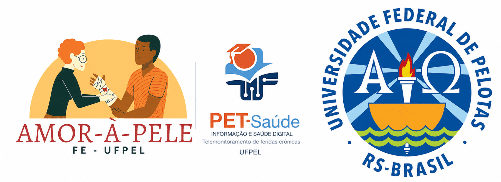
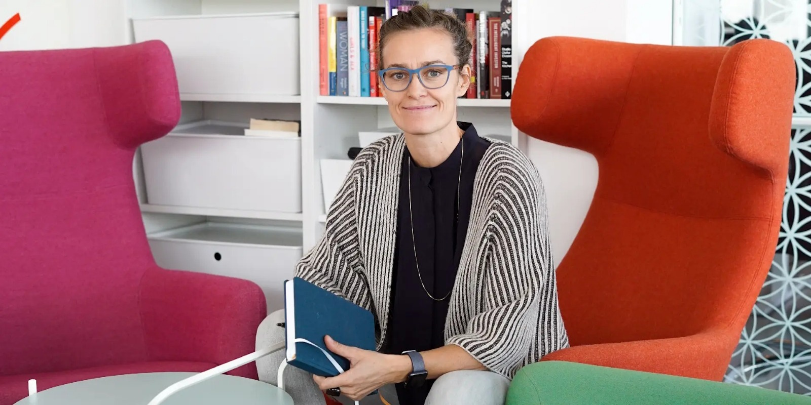
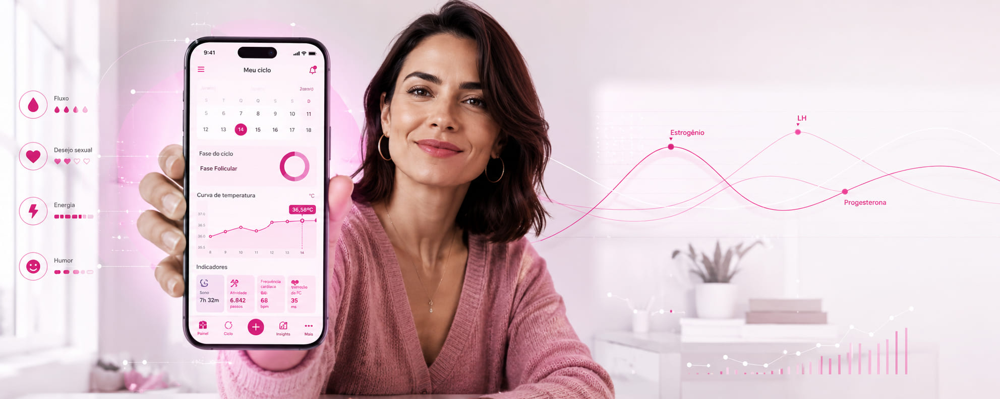
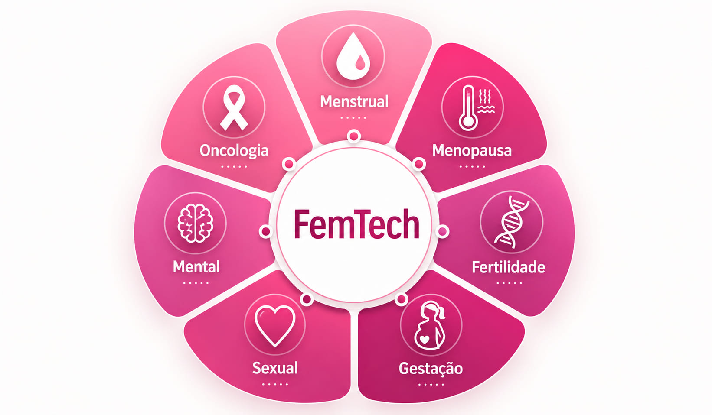
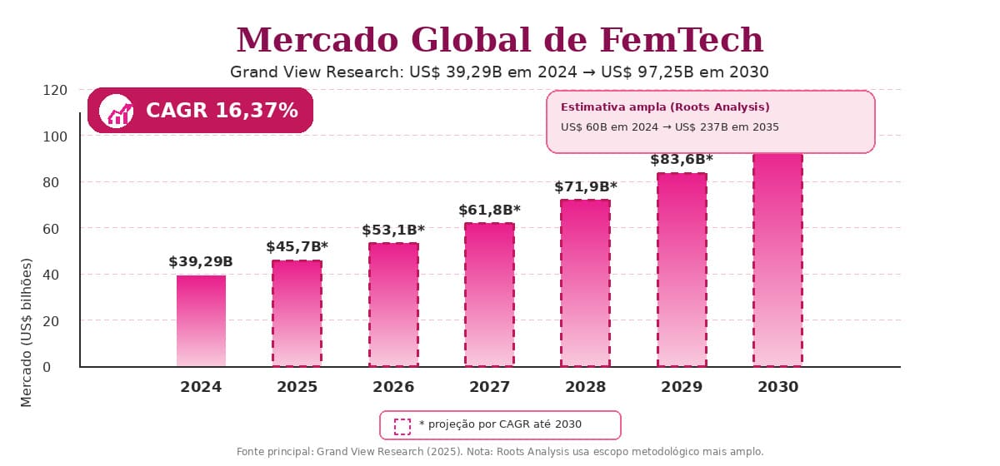
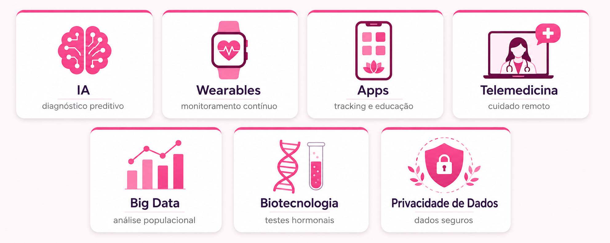
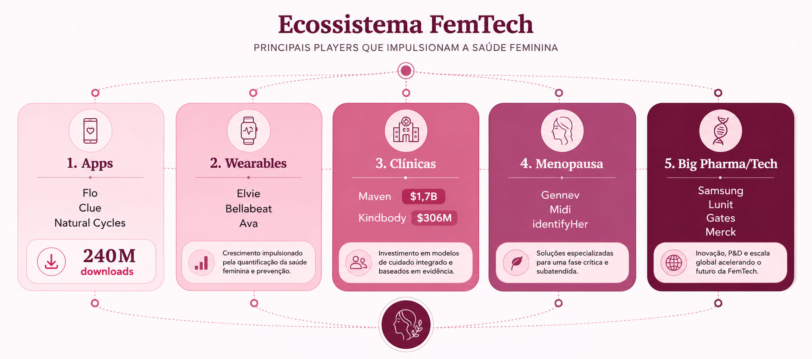
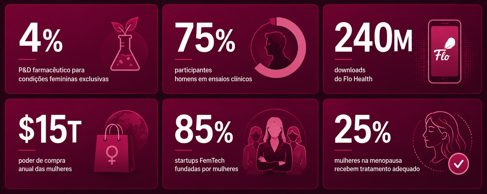
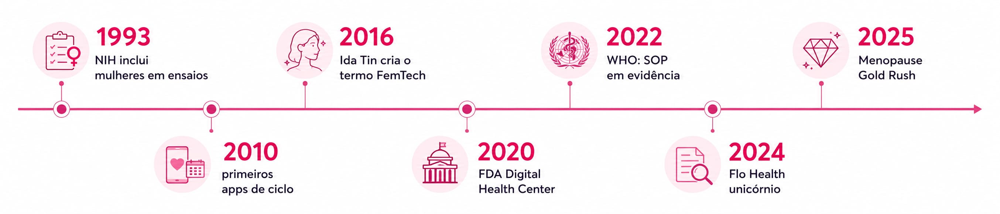

Do rastreamento de ciclos à inteligência artificial para menopausa — como a tecnologia está, finalmente, colocando a saúde feminina no centro do debate global.
O termo FemTech ("Female Technology") foi cunhado em 2016 pela empreendedora dinamarquesa Ida Tin, cofundadora do app Clue, para nomear o campo que aplica tecnologia, dados e inovação digital às necessidades de saúde que afetam exclusiva ou desproporcionalmente as mulheres.[4]
De aplicativos de rastreamento menstrual a wearables para menopausa, de clínicas virtuais de fertilidade a diagnósticos de câncer por IA — o FemTech abrange o ciclo completo de vida da mulher. Não é nicho. É uma nova arquitetura de cuidado centrada em quem foi historicamente ignorada pela medicina.

Em 2016, enquanto construía o Clue — app de rastreamento do ciclo menstrual —, Ida Tin percebeu que não havia um termo para descrever o campo em que estava trabalhando. Ela cunhou FemTech para dar nome a um setor que já existia mas permanecia invisível: a aplicação de tecnologia às necessidades de saúde das mulheres. A palavra foi além do marketing — tornou-se a linguagem comum de investidores, médicos e empreendedoras.[4]
↗ Como o Clue ganha dinheiro — princípios e promessasFoto: Ida Tin. Crédito a ser preenchido.

O ecossistema FemTech organiza-se em torno do ciclo biológico e das necessidades clínicas da mulher — da menarca à menopausa e além.

Apps de rastreamento de ciclo, predição de ovulação, gestão de TPM, endometriose e SOP — condição que afeta entre 6–13% das mulheres em idade reprodutiva.[5] A porta de entrada do FemTech para a maioria das usuárias.
O segmento de crescimento mais explosivo em 2024–2025, com CAGR próprio de 16,54%.[3] Plataformas como Gennev e Midi Health oferecem TRH digital, gestão de sintomas e acompanhamento longitudinal.
Monitoramento hormonal, janelas férteis, suporte a FIV, congelamento de óvulos. Em 2025, entre 5,4 e 7,7 milhões de mulheres vivem com infertilidade.[2] Do app Natural Cycles às clínicas virtuais como Kindbody.
Acompanhamento pré-natal remoto, monitoramento fetal, bombas de leite inteligentes (Elvie, Willow) e suporte ao pós-parto — incluindo depressão puerperal. Segmento que deteve 31,34% da receita FemTech em 2024.[3]
Saúde vaginal, disfunção do assoalho pélvico, dispositivos de treino pélvico e plataformas de educação sobre sexualidade. Área de crescimento acelerado, ainda subrepresentada nos portfólios institucionais.
Apps adaptados às flutuações hormonais, suporte à ansiedade perinatal e depressão pós-parto — esta última tratada digitalmente pela plataforma MamaLift Plus, com aprovação FDA como digital therapeutic.[3]
IA para detecção precoce de câncer de mama (Lunit + Volpara, adquirida em 2025), rastreamento cervical (MobileODT) e plataformas de navegação para pacientes oncológicas.[3]
O mercado FemTech global foi estimado em $39,29 bilhões em 2024, projetando atingir $97,25 bilhões em 2030 com CAGR de 16,37% (Grand View Research).[1] Outras estimativas que adotam definições mais amplas de mercado chegam a $60 bilhões em 2024 e $237 bilhões em 2035 (Roots Analysis).[2] A divergência reflete diferenças metodológicas entre relatórios, não imprecisão — mas em qualquer leitura o FemTech cresce a uma taxa 160% superior à do restante do mercado de saúde.[4]

Domina com 42–54% do mercado global.[1,3] O Silicon Valley Bank registrou $2,6 bilhões em financiamentos de saúde feminina em 2024.[3] EUA lidera em startups, capital de risco e aprovações regulatórias.
UK e DACH são os principais hubs. Flo Health (unicórnio britânico), Clue (Berlim) e Elvie (Londres) mostram que a inovação se descentralizou. Programa Horizonte Europa: $106,7 bilhões para saúde digital 2021–2027.[6]
Maior CAGR projetado: 15,46%.[3] Japão lidera na região; Índia lançou em 2025 parceria público-privada para integrar saúde reprodutiva digital em serviços rurais.[6]
Uma convergência de fatores históricos, sociais e tecnológicos explica a aceleração do setor. O FemTech não surgiu do nada — surgiu de décadas de lacunas acumuladas.
Só em 1993 o NIH passou a exigir mulheres em ensaios clínicos.[4] Ainda hoje, 75% dos participantes são homens e apenas 4% do P&D farmacêutico foca em condições femininas exclusivas — criando um mercado reprimido enorme.[7]
A universalização do smartphone permitiu monitoramento contínuo de saúde sem intervenção médica direta. O Flo Health soma 240 milhões de downloads e 70 milhões de usuárias ativas mensais, provando a demanda latente.[7]
Modelos de IA preveem complicações maternas com 88,03% de acurácia.[3] O Natural Cycles processa mais de 20 milhões de leituras de temperatura diárias para alcançar 98% de eficácia com uso perfeito.[8]
Mulheres controlam $15 trilhões em poder de compra anual e influenciam 90% das decisões de saúde familiar.[3] Esse dado finalmente chegou às salas de investidores, revertendo anos de subfinanciamento.
O FDA criou o Digital Health Center of Excellence em 2020 e aprovou o Natural Cycles como contracepção digital — sinalizando que ferramentas FemTech têm status clínico legítimo.[6] Em fevereiro de 2025, aprovou sensores de temperatura integrados ao app.[6]
Estudo publicado no Lancet Regional Health (2022) mostrou que 64% das mulheres americanas se sentiam mais confortáveis discutindo menstruação do que 5 anos antes.[6] O tabu diminuiu — e com ele, a barreira de adoção.
O FemTech não é um produto — é uma camada tecnológica sobre a biologia feminina. Sete tecnologias-chave convergem para criar este ecossistema de cuidado.

A Inteligência Artificial é o motor central: o Natural Cycles processa mais de 20 milhões de leituras de temperatura por dia.[8] O Flo Health analisa 70+ sintomas por usuária.[7] O Maven Clinic agrega wearables, resultados laboratoriais e prontuários em um único perfil longitudinal de saúde.[8] A IA não apenas rastreia — ela antecipa.
Cerca de 3.970 empresas compõem o ecossistema — das quais 1.060 são financiadas por venture capital, somando $7,61 bilhões captados.[3] De startups ágeis a gigantes farmacêuticas, todos descobriram o mercado que ignoraram por décadas.

O FemTech não nasce de uma moda — nasce de uma injustiça estrutural na medicina. Os números revelam simultaneamente o tamanho da lacuna e o potencial ainda inexplorado.

"Por muito tempo, as mulheres sofreram com condições de saúde mal compreendidas, mal diagnosticadas ou simplesmente ignoradas. Queremos que este investimento inaugure uma nova era de inovação centrada na mulher."
— Anita Zaidi, Presidente da Divisão de Igualdade de Gênero da Fundação Bill & Melinda Gates [2]A história do FemTech é também a história de como a medicina foi forçada, passo a passo, a reconhecer a mulher como sujeito — e não como variante do corpo masculino.

O "Menopause Gold Rush" de 2024–2025 marca um ponto de inflexão: pela primeira vez, a menopausa — que afeta 1 bilhão de mulheres globalmente, das quais apenas 25% recebem tratamento adequado[3] — recebe atenção tecnológica proporcional à sua prevalência. O Flo lançou produto para perimenopausa em julho de 2025; a identifyHer criou o wearable "Peri" para quantificar ondas de calor; a Progyny firmou parceria com o Oura Ring integrando biometria e saúde reprodutiva.[9]
Apesar do crescimento extraordinário, barreiras estruturais persistem e ameaçam a distribuição justa dos benefícios da revolução FemTech.
Em 2025, startups com equipes fundadoras exclusivamente femininas receberam apenas 0,6% do capital de VC nos EUA — apesar de representarem 85% do setor FemTech.[4,10]
Apps de rastreamento menstrual ficaram fora da proteção HIPAA. As emendas de dezembro de 2024 adicionaram novas exigências de conformidade, elevando a complexidade para startups.[3]
Estigmas culturais e infraestrutura digital precária limitam o acesso em países em desenvolvimento. 38% das mulheres americanas já adiaram cuidados de saúde por custo — globalmente, esse número é muito maior.[6]
Produtos FemTech raramente são cobertos por planos de saúde, criando disparidade entre quem pode pagar diretamente e quem depende do sistema público — amplificando desigualdades existentes.
Com 75% dos dados de ensaios clínicos gerados por homens,[7] modelos de IA treinados nesses conjuntos podem perpetuar diagnósticos inadequados quando aplicados à saúde feminina.
Startups FemTech atraem 25% menos candidatos e com 30% menos experiência do que outros segmentos de saúde digital, dificultando a formação de equipes técnicas sólidas.[4]
O FemTech não é uma tendência passageira. É a correção de uma dívida histórica da medicina com metade da humanidade — e o mercado finalmente percebeu isso.
Com CAGR de 16,4%,[1] o FemTech cresce 160% mais rápido que o restante do setor de saúde.[4] A projeção para 2030 varia de $97B a $237B conforme a metodologia — mas a grandeza é consistente em todas as fontes.
A próxima fronteira é conectar dados de wearables, prontuários, labs e ciclo menstrual em um único perfil longitudinal — a "linha do tempo de saúde" que o Maven Clinic já constrói para mais de 2.000 empresas em 175 países.[9]
Afeta 1 bilhão de mulheres; apenas 25% recebem tratamento adequado.[3] Este gap — recém-visibilizado e comercialmente inexplorado — é o maior motor de crescimento FemTech dos próximos 5 anos.
Winx Health vai a 6.000 farmácias Walgreens; Target vende Oura Ring nas prateleiras; CVS cria "Health Zones" com produtos maternos — capturando os 64% da Gen Z que prefere descobrir produtos de saúde em lojas físicas.[9]
Mais de 60% da receita das 20 maiores farmacêuticas vem de condições que afetam mulheres (McKinsey, 2024).[4] Samsung adquiriu a Sonio, Lunit comprou a Volpara, Merck e Bayer reposicionam portfólios.[3]
Índia, Brasil e Sudeste Asiático concentram centenas de milhões de mulheres sub-atendidas. A próxima onda de crescimento do FemTech virá destas geografias, à medida que smartphones e telemedicina ganham escala.[6]
Perguntas que o FemTech ainda não respondeu — e que talvez não queira.
Se 75% dos participantes de ensaios clínicos são homens[7] e os modelos de IA são treinados nestes mesmos dados, em que medida o FemTech está realmente rompendo a medicina centrada no masculino — ou apenas replicando seus vieses em uma nova embalagem tecnológica?
O FemTech promete empoderar mulheres por meio de dados sobre seu próprio corpo. Mas quando esses dados pertencem a empresas privadas — e apps de ciclo menstrual ficam fora da proteção HIPAA[3] —, de quem é, de fato, a saúde que está sendo gerenciada?
Startups fundadas por mulheres respondem por 85% do setor, mas recebem apenas 0,6% do capital de risco[4,10]. Se as mulheres constroem o FemTech mas não controlam seu financiamento, quem decide quais problemas femininos merecem solução?
A menopausa afeta 1 bilhão de mulheres e foi ignorada pela medicina por décadas. O fato de o "Menopause Gold Rush" surgir exatamente quando esse mercado atingiu escala comercial revela compaixão genuína — ou apenas o reconhecimento tardio de um segmento lucrativo?
O FemTech cresce aceleradamente em países de alta renda, mas esbarra em tabus culturais e infraestrutura precária nos mercados emergentes[6]. Quando a tecnologia chegar às mulheres mais vulneráveis, será pelo seu bem ou pelo interesse em explorar o último grande mercado virgem?
Rastrear continuamente ciclos, hormônios, humor e fertilidade cria perfis de saúde extraordinariamente íntimos. Há um ponto em que a automonitorização deixa de ser cuidado e se torna vigilância — e quem decide onde está essa fronteira?
O FemTech tende a tratar a saúde feminina como um problema de otimização individual — ciclos mais regulares, fertilidade calculada, sintomas gerenciados. Mas muitas dessas condições têm raízes sociais, ambientais e estruturais. A tecnologia resolve o problema ou apenas torna o sintoma mais suportável?
Mais de 60% da receita das 20 maiores farmacêuticas já vem de condições que afetam mulheres[4]. Com Big Pharma e Big Tech entrando no FemTech por aquisição, o que acontece com a inovação disruptiva que nasceu justamente para desafiar esses mesmos atores?